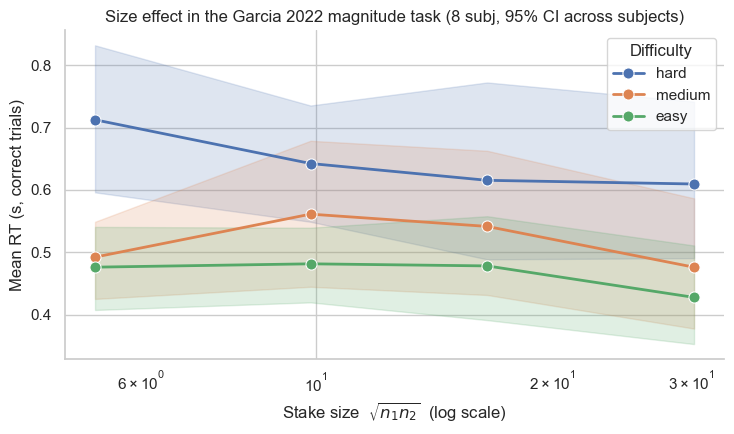
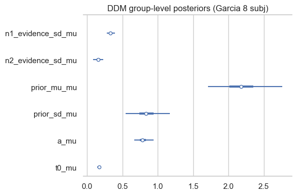
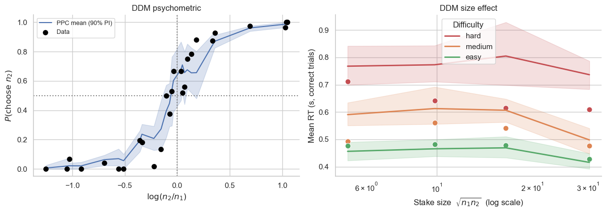
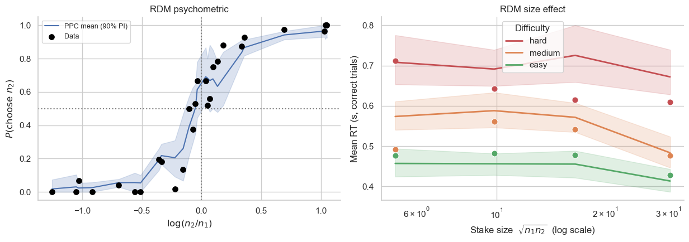
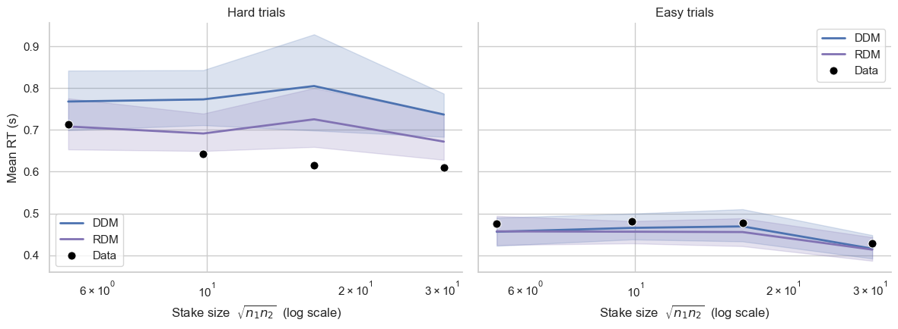
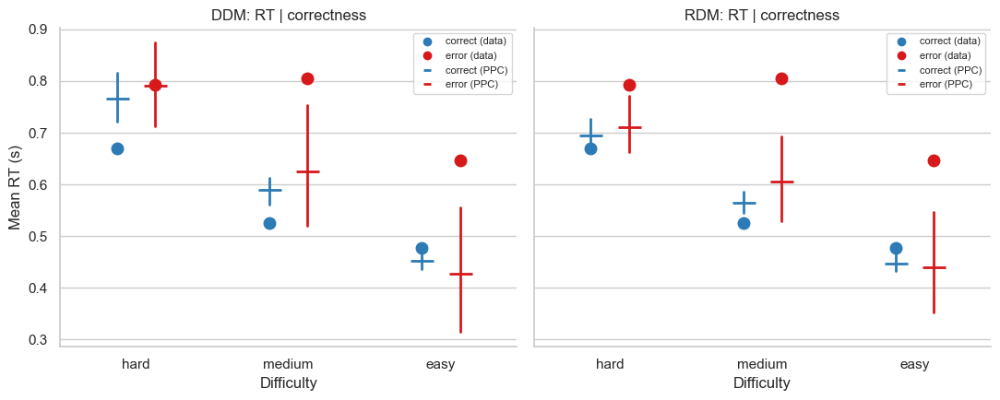
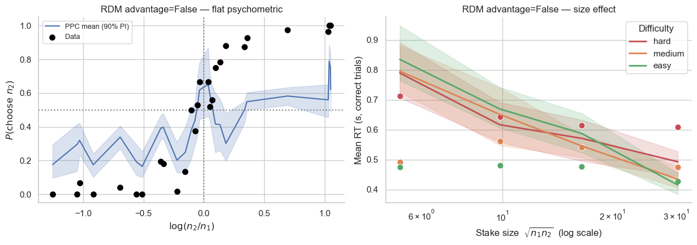

Lesson 9: Choice + Reaction Time Models — DDM and Race-Diffusion¶
So far we have modelled only the choice that participants make on each trial. But behaviour also has a temporal signature: how long the participant deliberated. Reaction times (RT) carry information that choice-only models discard. Two trials with the same choice can differ wildly in confidence, evidence quality, or deliberation effort — and those differences shape RT.
This lesson introduces bauer’s two joint choice + RT model families:
Drift-Diffusion Model (DDM) — a single accumulator integrates a signed evidence signal (option 2 minus option 1) until it hits one of two boundaries.
Race-Diffusion Model (RDM) — two parallel accumulators, one per option, each integrating its own evidence stream until one wins.
Both reuse the same Bayesian-observer cognitive front-end as the static psychometric models from lessons 1–4 (priors, asymmetric encoding noise, the shrinkage weights \(\beta_k\)). What changes is only the decision rule: instead of a one-shot cumulative-normal comparison, we now have a stochastic accumulation process whose first-passage time is the participant’s RT.
Why care about RT?¶
A choice-only model fits \(P(\text{choose 2})\) and ignores the RT distribution. That throws away three pieces of information:
The size effect. On magnitude tasks, RT systematically decreases with stimulus magnitude even at fixed difficulty (fixed \(\log(n_2/n_1)\)). Bigger numbers \(\Rightarrow\) bigger drift rates \(\Rightarrow\) faster races. Choice-only models are silent on this — they have no notion of how long a decision took.
Identifiability. Choice probabilities are invariant to many transformations of the underlying parameters (e.g. scaling all noise SDs by a constant leaves \(P\) unchanged if the SNR is preserved). RT distributions break those degeneracies because the absolute speed of accumulation matters, not just the relative SNR.
Falsification. A model that fits choice probabilities but predicts the wrong RT distributions is wrong in a falsifiable way. Joint choice+RT models are simply a stricter test of the underlying cognitive theory.
In this lesson we use the Barreto-Garcia et al. (2022) magnitude task to fit both DDM and RDM variants, compare their posteriors, and see how the race-model “advantage” decomposition of drift is essential for capturing choice — using the wrong decomposition produces a flat psychometric.
[ ]:
import warnings; warnings.filterwarnings('ignore')
import os
import numpy as np
import pandas as pd
import matplotlib.pyplot as plt
import seaborn as sns
import arviz as az
sns.set_theme(context='notebook', style='whitegrid', palette='deep')
from bauer.utils.data import load_garcia2022
from bauer.models import (
MagnitudeComparisonModel,
DDMMagnitudeComparisonModel,
RaceDiffusionMagnitudeComparisonModel,
)
# Load the magnitude task and subset to 8 subjects to keep fits short.
df_full = load_garcia2022(task='magnitude')
subs = df_full.index.get_level_values('subject').unique()[:8]
df = df_full.loc[df_full.index.get_level_values('subject').isin(subs)].copy()
# ── Preprocess: drop physiologically implausible fast trials ──────────────
# Same RT filter as lesson 8 — see that lesson for the full pedagogical
# motivation. Without it, the per-subject _t0_cap (= 0.95 * min rt) sits
# below the t0 prior centre for most subjects, squeezing t0 against the cap
# and funneling t0_sd through the HalfCauchy heavy tail. Concretely, for
# this RDM fit, dropping it cuts divergences from ~80 to ~1.
RT_MIN = 0.20
n_before = len(df)
df = df[df['rt'] >= RT_MIN].copy()
n_subj = df.index.get_level_values('subject').nunique()
print(f"Subjects: {n_subj}")
print(f"Trials: {len(df)} (~{len(df) // n_subj} per subject)")
print(f"Columns: {list(df.columns)}")
print(f"\nDropped {n_before - len(df)} / {n_before} trials with rt < {RT_MIN:.2f}s "
f"({100*(n_before - len(df))/n_before:.1f}%); min rt now {df['rt'].min():.3f}s.")
# Cache directory for fitted idata, so re-running the notebook after a
# downstream cell change doesn't redo the (~5-15 min) fits. Set
# BAUER_TUTORIAL_REFIT=1 in the env to force a fresh fit. Cache key
# encodes the RT cutoff so a future change there gets a fresh cache.
CACHE_DIR = os.path.expanduser('~/.bauer_tutorial_cache')
os.makedirs(CACHE_DIR, exist_ok=True)
FORCE_REFIT = bool(os.environ.get('BAUER_TUTORIAL_REFIT', ''))
CACHE_TAG = f'garcia_n{n_subj}_rtmin{int(RT_MIN*1000)}'
def fit_or_load(model, name, draws=600, tune=600, chains=4, target_accept=0.95):
path = os.path.join(CACHE_DIR, f'{CACHE_TAG}_{name}.nc')
if os.path.exists(path) and not FORCE_REFIT:
print(f"Loading cached {name} fit from {path}")
return az.from_netcdf(path)
model.build_estimation_model(data=df, hierarchical=True)
idata = model.sample(draws=draws, tune=tune, chains=chains,
target_accept=target_accept)
idata.to_netcdf(path)
print(f"Saved {name} fit to {path}")
return idata
def add_bins(d, n_stake_bins=4, n_diff_bins=3):
"""Annotate a paradigm DataFrame with stake / difficulty bins and the
'correct' bool. Used by every size-effect plot below."""
d = d.copy()
d['stake'] = np.sqrt(d['n1'] * d['n2'])
d['log_stake'] = np.log(d['stake'])
d['log_ratio'] = np.log(d['n2'] / d['n1'])
d['abs_log_ratio'] = d['log_ratio'].abs()
d['stake_bin'] = pd.qcut(d['log_stake'], n_stake_bins, labels=False,
duplicates='drop')
d['diff_bin'] = pd.qcut(d['abs_log_ratio'], n_diff_bins,
labels=['hard', 'medium', 'easy'][:n_diff_bins],
duplicates='drop')
d['stake_mid'] = d.groupby('stake_bin', observed=True)['stake'] \
.transform('mean')
if 'choice' in d.columns:
d['correct'] = d['choice'].astype(bool) == (d['n2'] > d['n1'])
return d
df.head()
Subjects: 8
Trials: 1568 (~196 per subject)
Columns: ['n1', 'n2', 'choice', 'rt', 'accuracy', 'correct', 'isi']
Dropped 67 / 1635 trials with rt < 0.20s (4.1%); min rt now 0.202s.
| n1 | n2 | choice | rt | accuracy | correct | isi | ||||
|---|---|---|---|---|---|---|---|---|---|---|
| subject | format | run | trial_nr | |||||||
| 1 | non-symbolic | 1 | 1 | 7 | 10 | True | 0.775 | 1 | -1 | 8.033 |
| 2 | 5 | 14 | False | 0.892 | 0 | -1 | 8.532 | |||
| 3 | 7 | 14 | True | 0.611 | 1 | -1 | 6.533 | |||
| 4 | 7 | 10 | True | 0.660 | 1 | -1 | 7.033 | |||
| 5 | 5 | 10 | True | 0.830 | 1 | -1 | 9.033 |
The size effect in the data¶
Before fitting any model, let’s look at the empirical RT distribution. The size effect is one of the most robust phenomena in numerical cognition: at fixed log-ratio difficulty, larger stimulus magnitudes are decided faster. This emerges automatically from a Bayesian-observer + drift-diffusion theory (larger posterior log-mean \(\Rightarrow\) larger drift), but a choice-only psychometric model can’t say anything about it.
We bin trials by the geometric mean \(\sqrt{n_1 n_2}\) (“stake size”) and by absolute log-ratio (difficulty), then average within each subject before plotting — so the 95% CI reflects between-subject variability, not the much larger trial-to-trial variability.
[ ]:
db = add_bins(df)
db_corr = db[db['correct']]
# Per-subject mean RT in each (stake_bin, diff_bin) cell. Aggregating *within*
# subject first means the across-subject CI is a clean measure of the size
# effect's reliability across the population.
sub_agg = (db_corr.groupby(['subject', 'stake_bin', 'stake_mid', 'diff_bin'],
observed=True)['rt'].mean().reset_index())
fig, ax = plt.subplots(figsize=(7.5, 4.5))
sns.lineplot(data=sub_agg, x='stake_mid', y='rt', hue='diff_bin',
hue_order=['hard', 'medium', 'easy'],
errorbar=('ci', 95), marker='o', lw=2, ms=8,
err_style='band', err_kws={'alpha': 0.18},
ax=ax)
ax.set_xscale('log')
ax.set_xlabel(r'Stake size $\sqrt{n_1 n_2}$ (log scale)')
ax.set_ylabel('Mean RT (s, correct trials)')
ax.set_title('Size effect in the Garcia 2022 magnitude task '
'(8 subj, 95% CI across subjects)')
ax.legend(title='Difficulty', loc='upper right')
sns.despine()
plt.tight_layout()

Mean RT decreases with stake size at every difficulty level — a clean size effect. A choice-only model cannot reproduce this curve at all because it has no RT in its likelihood. To fit it, we need a process model with an explicit time variable.
The Drift-Diffusion Model¶
The DDM (Ratcliff 1978; Bogacz et al. 2006) treats the decision as the integration of a single noisy evidence signal until one of two boundaries is hit. For a 2AFC magnitude comparison, the evidence signal is the signed posterior difference:
Drift is the subjective signal-to-noise ratio of the perceived log-magnitude difference. Diffusion noise \(\sigma\) is fixed at 1 (HSSM convention; the boundary absorbs the SNR scale). Three new parameters enter:
symbol |
meaning |
|---|---|
\(a\) |
half boundary separation (full boundary = \(2a\)) |
\(z\) |
normalized starting point in \([0, 1]\); bauer defaults to \(z = 0.5\) (unbiased) |
\(t_0\) |
non-decision time (motor + sensory delay), in seconds |
The first-passage-time density is the analytic Wiener WFPT (Navarro & Fuss 2009), provided by HSSM. Positive drift \(\Rightarrow\) upper boundary hit first \(\Rightarrow\) choice = True (option 2 chosen).
What does drift inherit from the cognitive front-end?¶
The Bayesian-observer mixing weights \(\beta_k = \sigma_p^2 / (\sigma_p^2 + \nu_k^2)\) appear in the numerator of \(v\) (through \(\mu_{\text{post},k}\)). The denominator \(\sqrt{\nu_1^2 + \nu_2^2}\) uses the raw encoding SDs. So:
Asymmetric noise (\(\nu_1 \neq \nu_2\)): drift gets pulled toward the prior more for the noisier option, exactly as in the static psychometric.
Tight prior (\(\sigma_p \to 0\)): both posterior means collapse to \(\mu_p\), drift collapses to zero, and the DDM predicts no choice information and very long RTs — the agent is overruled by the prior.
These mechanisms come for free from the cognitive front-end. The DDM only adds \(a\), \(t_0\) (and optionally \(z\), \(v_{\text{scale}}\)) on top.
[ ]:
# ── Fit the DDM on 8 subjects ──────────────────────────────────────────────
# This will take ~5–15 minutes on a laptop with the pymc backend.
# Sampler defaults: tune=1000, draws=1000, chains=4, target_accept=0.95;
# the tutorial uses tune/draws=600 to keep wall time manageable.
m_ddm = DDMMagnitudeComparisonModel(
paradigm=df,
fit_separate_evidence_sd=True, # allow ν_1 ≠ ν_2 (sequential task)
fit_prior=True, # estimate Bayesian-observer prior μ_p, σ_p
)
idata_ddm = fit_or_load(m_ddm, 'ddm')
Initializing NUTS using adapt_full...
Multiprocess sampling (4 chains in 4 jobs)
NUTS: [n1_evidence_sd_mu_untransformed, n1_evidence_sd_sd, n1_evidence_sd_offset, n2_evidence_sd_mu_untransformed, n2_evidence_sd_sd, n2_evidence_sd_offset, prior_mu_mu, prior_mu_sd, prior_mu_offset, prior_sd_mu_untransformed, prior_sd_sd, prior_sd_offset, a_mu_untransformed, a_sd, a_offset, t0_mu_untransformed, t0_sd, t0_offset]
Sampling 4 chains for 600 tune and 600 draw iterations (2_400 + 2_400 draws total) took 172 seconds.
There were 8 divergences after tuning. Increase `target_accept` or reparameterize.
The rhat statistic is larger than 1.01 for some parameters. This indicates problems during sampling. See https://arxiv.org/abs/1903.08008 for details
The effective sample size per chain is smaller than 100 for some parameters. A higher number is needed for reliable rhat and ess computation. See https://arxiv.org/abs/1903.08008 for details
Saved ddm fit to /Users/gdehol/.bauer_tutorial_cache/garcia_n8_rtmin200_ddm.nc
(We use draws=600, tune=600 to keep tutorial wall time manageable. For production fits, use the bauer defaults draws=1000, tune=1000 — see lesson 4.)
Diagnostics first¶
Before interpreting any posterior, check that NUTS sampled cleanly:
[ ]:
diag = az.summary(
idata_ddm,
var_names=['a_mu', 't0_mu', 'n1_evidence_sd_mu', 'n2_evidence_sd_mu',
'prior_mu_mu', 'prior_sd_mu'],
kind='diagnostics',
)
print(diag)
print()
print(f"Divergences: {int(idata_ddm.sample_stats['diverging'].sum())}")
print(f"Max r̂: {float(diag['r_hat'].max()):.3f}")
print(f"Min ESS bulk: {int(diag['ess_bulk'].min())}")
mcse_mean mcse_sd ess_bulk ess_tail r_hat
a_mu 0.002 0.002 1542.0 1017.0 1.01
t0_mu 0.000 0.000 1611.0 1329.0 1.01
n1_evidence_sd_mu 0.001 0.001 1458.0 1275.0 1.00
n2_evidence_sd_mu 0.001 0.001 894.0 983.0 1.00
prior_mu_mu 0.007 0.007 1448.0 1365.0 1.00
prior_sd_mu 0.007 0.007 629.0 748.0 1.01
Divergences: 8
Max r̂: 1.010
Min ESS bulk: 629
Rules of thumb (from the bauer convention, see CLAUDE.md):
\(\hat r \le 1.01\) on every group-level mean: chains have mixed.
ESS bulk \(\ge 100\) per chain (i.e. \(\ge 400\) for 4 chains): enough effective samples to interpret the mean.
Divergences \(< 1\%\) of post-warmup draws: geometry isn’t pathological.
If \(\hat r > 1.01\) or ESS is too low, increase warmup (tune=1500) and/or target_accept=0.98. Don’t lower target_accept below 0.95 unless you’ve ruled out divergences.
Posterior of the cognitive front-end¶
[ ]:
fig, ax = plt.subplots(figsize=(6, 4))
az.plot_forest(
idata_ddm,
var_names=['n1_evidence_sd_mu', 'n2_evidence_sd_mu',
'prior_mu_mu', 'prior_sd_mu', 'a_mu', 't0_mu'],
combined=True, ax=ax,
)
ax.set_title('DDM group-level posteriors (Garcia 8 subj)')
plt.tight_layout()

Posterior predictive: choice and the size effect¶
We draw 60 sets of subject-level parameters from the DDM posterior, simulate (rt, choice) for the original paradigm with each, and compare to the data on two functions:
Psychometric — \(P(\text{choose }2)\) vs \(\log(n_2/n_1)\). The DDM has to match this, just like a static psychometric model.
Size-effect chronometric — mean RT vs stake size, conditional on difficulty. This is the key RT signature a choice-only model cannot fit.
The PPC band is the 5–95% percentile interval over per-bin posterior means, not over per-trial RT samples — so the band reflects parameter uncertainty, not the (very large) within-trial diffusion noise.
[ ]:
ppc_ddm = m_ddm.ppc(df, idata_ddm, n_posterior_samples=60, progressbar=False)
print(f"PPC shape: {ppc_ddm.shape}, columns: {list(ppc_ddm.columns)}")
PPC shape: (94080, 2), columns: ['simulated_rt', 'simulated_choice']
[ ]:
def ppc_psychometric(df_data, ppc):
"""Long-format DataFrame: per (ppc_sample, log_ratio) the mean
P(choose 2) across trials. Aggregated this way, the spread across
ppc_samples *is* the posterior uncertainty in the psychometric."""
d = df_data.copy()
d['log_ratio'] = np.log(d['n2'] / d['n1'])
p = ppc.join(d[['log_ratio']], how='left').reset_index()
p['choice_int'] = p['simulated_choice'].astype(int)
return (p.groupby(['ppc_sample', 'log_ratio'])
['choice_int'].mean().reset_index())
def ppc_size_effect(df_data, ppc, correct_only=True):
"""Long-format DataFrame: per (ppc_sample, stake_bin, diff_bin) the
mean simulated_rt across trials. correct_only=True restricts to trials
where the *simulated* choice agrees with n2 > n1."""
d = add_bins(df_data)
p = ppc.join(d[['stake_bin', 'stake_mid', 'diff_bin', 'n1', 'n2']],
how='left').reset_index()
if correct_only:
sim_correct = p['simulated_choice'].astype(bool) == (p['n2'] > p['n1'])
p = p[sim_correct]
return (p.groupby(['ppc_sample', 'stake_bin', 'stake_mid', 'diff_bin'],
observed=True)['simulated_rt'].mean().reset_index())
def plot_ppc_psychometric(df_data, ppc, ax=None, title=''):
d = df_data.copy()
d['log_ratio'] = np.log(d['n2'] / d['n1'])
obs = (d.groupby('log_ratio')['choice']
.apply(lambda x: x.astype(int).mean()).reset_index())
pp = ppc_psychometric(df_data, ppc)
if ax is None:
fig, ax = plt.subplots(figsize=(5.5, 4))
sns.lineplot(data=pp, x='log_ratio', y='choice_int',
errorbar=('pi', 90), ax=ax, color='C0',
label='PPC mean (90% PI)')
ax.scatter(obs['log_ratio'], obs['choice'], color='black', s=45,
zorder=5, label='Data')
ax.axhline(.5, c='gray', ls=':'); ax.axvline(0, c='gray', ls=':')
ax.set_xlabel(r'$\log(n_2 / n_1)$')
ax.set_ylabel(r'$P(\mathrm{choose}\ n_2)$')
ax.set_title(title or 'Psychometric'); ax.legend(fontsize=9)
sns.despine(ax=ax)
return ax
def plot_ppc_size_effect(df_data, ppc, ax=None, title='', show_data=True):
sub_obs = (add_bins(df_data).query('correct')
.groupby(['subject', 'stake_bin', 'stake_mid', 'diff_bin'],
observed=True)['rt'].mean().reset_index())
pp = ppc_size_effect(df_data, ppc)
if ax is None:
fig, ax = plt.subplots(figsize=(7, 4.5))
palette = {'hard': 'C3', 'medium': 'C1', 'easy': 'C2'}
if show_data:
sns.lineplot(data=sub_obs, x='stake_mid', y='rt', hue='diff_bin',
hue_order=['hard', 'medium', 'easy'], palette=palette,
errorbar=None, marker='o', ms=8, lw=0,
ax=ax, legend=False)
sns.lineplot(data=pp, x='stake_mid', y='simulated_rt', hue='diff_bin',
hue_order=['hard', 'medium', 'easy'], palette=palette,
errorbar=('pi', 90), err_style='band',
err_kws={'alpha': 0.18}, lw=2, ax=ax)
ax.set_xscale('log')
ax.set_xlabel(r'Stake size $\sqrt{n_1 n_2}$ (log scale)')
ax.set_ylabel('Mean RT (s, correct trials)')
ax.set_title(title or 'Size effect'); ax.legend(title='Difficulty')
sns.despine(ax=ax)
return ax
fig, axes = plt.subplots(1, 2, figsize=(12.5, 4.5))
plot_ppc_psychometric(df, ppc_ddm, ax=axes[0], title='DDM psychometric')
plot_ppc_size_effect(df, ppc_ddm, ax=axes[1], title='DDM size effect')
plt.tight_layout()

The DDM psychometric tracks every data point cleanly — same as a static psychometric model would. The right panel is the new test: filled markers are the per-subject means in each (stake, difficulty) cell, lines+bands are the DDM posterior predictive. The DDM does reproduce the size effect (RT decreases with stake) and the difficulty ordering (hard slowest, easy fastest). The mechanism is prior shrinkage: when both numbers are far from the inferred prior mean, the Bayesian observer’s posterior is pulled toward the prior asymmetrically, leaving a residual drift that depends on stake.
The Race-Diffusion Model¶
The RDM (Tillman, Van Zandt & Logan 2020; van Ravenzwaaij et al. 2020) takes a different geometric view: instead of one accumulator integrating a signed difference, each option drives its own positive accumulator, and the first to hit the common boundary wins.
The first-passage time of accumulator \(k\) to barrier \(a\) is inverse Gaussian:
(with diffusion noise fixed to \(\sigma_k = 1\) — the standard convention; see notes/race_diffusion_math.md for why this is the principled choice).
The race likelihood for “\(k\) wins at time \(t\)” is the IG pdf of the winner times the IG survival function of the loser:
bauer implements this in closed form (logp_race_diffusion_2) — no likelihood-approximation networks (LANs) needed.
Sequential evidence-stream interpretation¶
Conceptually, each accumulator’s continuous Wiener noise \(\sigma = 1\) is the per-unit-time sensory noise. The accumulator’s state at time \(t\) is the agent’s running posterior estimate of \(\log s_k\) given the evidence collected so far. Across-trial drift variability (:math:`s_v`) is therefore not a separate parameter — sensory uncertainty is fully expressed through the within-trial diffusion. Adding \(s_v\) on top would double-count (Bogacz et al. 2006; Drugowitsch et al. 2012).
The “advantage” decomposition (and why it matters)¶
A natural-looking choice for the per-accumulator drift is
i.e. each accumulator’s drift is the cognitive estimate of its option’s log-magnitude, plus a baseline urgency \(w_0\). This is what we’ll call advantage=False. It seems sensible, but it doesn’t fit choice data properly.
The reason: under this parameterisation, drifts are nearly identical for the two accumulators in any trial where both options are similarly above (or below) the prior. The race’s relative speed is driven only by tiny posterior differences, while \(w_0\) scales the absolute drift. With even modest noise, the two accumulators race nearly neck-and-neck, and choice probabilities flatten toward 0.5 regardless of \(\log(n_2/n_1)\).
The fix (van Ravenzwaaij et al. 2020) is the advantage decomposition:
:math:`w_0` — baseline drift (urgency / non-evidence accumulation).
:math:`w_d` — difference sensitivity. Coefficient on the relative log-magnitude \(\tilde\mu_i - \tilde\mu_j\), which has opposite sign for the two accumulators. This is the only term that creates discriminability.
:math:`w_s` — summary sensitivity. Coefficient on the (shared) total magnitude. Drives the size effect on RT (larger pairs \(\Rightarrow\) both drifts scaled up \(\Rightarrow\) faster races).
advantage=True is the bauer default. We’ll fit both and let you see the difference.
[ ]:
# ── Fit the RDM (advantage=True, the default) ─────────────────────────────
# RDM with fit_prior=True needs more warmup than the DDM — see
# notes/race_diffusion_math.md §5 for the identifiability geometry.
m_rdm = RaceDiffusionMagnitudeComparisonModel(
paradigm=df,
fit_separate_evidence_sd=True,
fit_prior=True,
advantage=True,
)
idata_rdm = fit_or_load(m_rdm, 'rdm', tune=1500, target_accept=0.98)
Loading cached rdm fit from /Users/gdehol/.bauer_tutorial_cache/garcia_n8_rtmin200_rdm.nc
[ ]:
diag = az.summary(
idata_rdm,
var_names=['a_mu', 't0_mu', 'w_0_mu', 'w_d_mu', 'w_s_mu',
'n1_evidence_sd_mu', 'n2_evidence_sd_mu',
'prior_mu_mu', 'prior_sd_mu'],
kind='diagnostics',
)
print(diag)
print(f"\nDivergences: {int(idata_rdm.sample_stats['diverging'].sum())}")
print(f"Max r̂: {float(diag['r_hat'].max()):.3f}")
mcse_mean mcse_sd ess_bulk ess_tail r_hat
a_mu 0.004 0.003 1000.0 1700.0 1.00
t0_mu 0.000 0.001 1696.0 1216.0 1.00
w_0_mu 0.022 0.027 294.0 403.0 1.01
w_d_mu 0.005 0.004 2021.0 1628.0 1.00
w_s_mu 0.001 0.001 1789.0 1594.0 1.00
n1_evidence_sd_mu 0.002 0.002 1816.0 1817.0 1.00
n2_evidence_sd_mu 0.002 0.002 2033.0 2102.0 1.00
prior_mu_mu 0.007 0.006 1680.0 1566.0 1.00
prior_sd_mu 0.004 0.004 1625.0 1824.0 1.00
Divergences: 1
Max r̂: 1.010
[ ]:
ppc_rdm = m_rdm.ppc(df, idata_rdm, n_posterior_samples=60, progressbar=False)
fig, axes = plt.subplots(1, 2, figsize=(12.5, 4.5))
plot_ppc_psychometric(df, ppc_rdm, ax=axes[0], title='RDM psychometric')
plot_ppc_size_effect(df, ppc_rdm, ax=axes[1], title='RDM size effect')
plt.tight_layout()

The RDM also fits the psychometric and reproduces the size effect, but through a different mechanism: the summary drift coefficient \(w_s\) multiplies \((\tilde\mu_1 + \tilde\mu_2)\), so increasing the total magnitude literally raises the drift on both accumulators in tandem. That makes the race finish faster regardless of which side wins.
How DDM and RDM look different¶
Both models fit the choice and the size effect well, so on these summaries they’re nearly indistinguishable. Where do they actually diverge?
1. The size effect, side by side¶
Plotting both PPC bands on the same axes makes the small-but-systematic differences visible — the RDM’s size effect is typically a hair steeper than the DDM’s, because \(w_s\) amplifies the magnitude effect directly while the DDM only gets it through the cognitive front-end.
[ ]:
def plot_size_effect_comparison(df_data, ppcs, palette=None):
"""Overlay multiple models' size-effect PPCs in two panels — one panel
per difficulty bin extreme (hard vs easy) so the curve shapes are
legible."""
sub_obs = (add_bins(df_data).query('correct')
.groupby(['subject', 'stake_bin', 'stake_mid', 'diff_bin'],
observed=True)['rt'].mean().reset_index())
pp_models = []
for name, ppc in ppcs.items():
pp = ppc_size_effect(df_data, ppc)
pp['model'] = name
pp_models.append(pp)
pp_long = pd.concat(pp_models, ignore_index=True)
if palette is None:
palette = {'DDM': 'C0', 'RDM': 'C4'}
fig, axes = plt.subplots(1, 2, figsize=(12, 4.5), sharey=True)
for ax, diff in zip(axes, ['hard', 'easy']):
d_obs = sub_obs[sub_obs['diff_bin'] == diff]
d_pp = pp_long[pp_long['diff_bin'] == diff]
sns.lineplot(data=d_pp, x='stake_mid', y='simulated_rt', hue='model',
palette=palette, errorbar=('pi', 90),
err_style='band', err_kws={'alpha': 0.2}, lw=2, ax=ax)
sns.lineplot(data=d_obs, x='stake_mid', y='rt', errorbar=None,
marker='o', ms=8, lw=0, color='black', ax=ax,
label='Data', legend=True)
ax.set_xscale('log')
ax.set_xlabel(r'Stake size $\sqrt{n_1 n_2}$ (log scale)')
ax.set_ylabel('Mean RT (s)')
ax.set_title(f'{diff.capitalize()} trials')
sns.despine(ax=ax)
plt.tight_layout()
return fig
plot_size_effect_comparison(df, {'DDM': ppc_ddm, 'RDM': ppc_rdm})


2. Choice-conditional RT: correct vs error¶
The classic textbook discriminator. Under bauer’s basic DDM (unbiased start \(z=0.5\), no across-trial drift variability \(s_v\)), the Wiener first-passage density is symmetric in the sign of drift — so mean RT for correct responses equals mean RT for errors. With variability (e.g. \(s_v\)), the DDM produces fast errors (drift draws below threshold lead to faster mistakes); without variability, mean(RT|error) = mean(RT|correct).
The race-diffusion model does not share that symmetry. Each accumulator has its own inverse-Gaussian first-passage time. When the “wrong” accumulator wins despite a smaller drift, it must do so via a left-tail draw — but the winning IG distribution conditioned on winning has a longer mean than the losing one’s mean. Result: mean(RT|error) > mean(RT|correct) in the RDM, more so on easier trials where drift differences are largest.
[ ]:
def conditional_rt(df_data, ppc, kind):
"""kind='data' uses df_data['rt']; kind='ppc' uses ppc."""
d = add_bins(df_data)
if kind == 'data':
out = (d.groupby(['diff_bin', 'correct'], observed=True)['rt']
.mean().reset_index().rename(columns={'rt': 'mean_rt'}))
out['source'] = 'Data'
return out
p = ppc.join(d[['diff_bin', 'n1', 'n2']], how='left').reset_index()
p['sim_correct'] = p['simulated_choice'].astype(bool) == (p['n2'] > p['n1'])
return (p.groupby(['ppc_sample', 'diff_bin', 'sim_correct'],
observed=True)['simulated_rt'].mean()
.reset_index().rename(columns={'simulated_rt': 'mean_rt',
'sim_correct': 'correct'}))
fig, axes = plt.subplots(1, 2, figsize=(11, 4.5), sharey=True)
hue_order = [True, False]
hue_labels = {True: 'correct', False: 'error'}
palette = {True: '#2c7bb6', False: '#d7191c'}
for ax, name, ppc in [(axes[0], 'DDM', ppc_ddm), (axes[1], 'RDM', ppc_rdm)]:
d_obs = conditional_rt(df, None, 'data')
d_pp = conditional_rt(df, ppc, 'ppc')
sns.pointplot(data=d_pp, x='diff_bin', y='mean_rt', hue='correct',
hue_order=hue_order, palette=palette,
order=['hard', 'medium', 'easy'],
errorbar=('pi', 90), dodge=0.25, ax=ax,
marker='_', linestyles='none', markersize=18,
err_kws={'linewidth': 2}, legend=False)
sns.pointplot(data=d_obs, x='diff_bin', y='mean_rt', hue='correct',
hue_order=hue_order, palette=palette,
order=['hard', 'medium', 'easy'],
errorbar=None, dodge=0.25, ax=ax,
markers='o', markersize=8, linestyles='none', legend=False)
# Manual legend
from matplotlib.lines import Line2D
handles = [
Line2D([0], [0], marker='o', ls='', color=palette[True], label='correct (data)'),
Line2D([0], [0], marker='o', ls='', color=palette[False], label='error (data)'),
Line2D([0], [0], marker='_', ls='', color=palette[True], label='correct (PPC)', mew=2),
Line2D([0], [0], marker='_', ls='', color=palette[False], label='error (PPC)', mew=2),
]
ax.legend(handles=handles, fontsize=8, loc='upper right')
ax.set_title(f'{name}: RT | correctness')
ax.set_xlabel('Difficulty')
ax.set_ylabel('Mean RT (s)')
sns.despine(ax=ax)
plt.tight_layout()

Look at the easier difficulty levels: in the data, errors tend to be slightly slower than corrects (a small but classic finding). The DDM PPC has the correct/error markers nearly stacked — its predicted means are essentially equal because there’s no across-trial drift variability. The RDM PPC has them visibly separated, with errors above corrects, especially on easy trials.
If your data show fast errors (errors faster than corrects), neither of these models will fit it cleanly — you’d need a DDM with \(s_v\) added, or a race model with starting-point variability.
The ablation: advantage=False produces a flat psychometric¶
We now fit the same race model with the simpler decomposition \(v_k = w_0 + \tilde\mu_k\) and plot its psychometric. This run is shorter (smaller draws, fewer chains) because the goal is just to demonstrate the failure mode, not to draw conclusions from the posterior.
[ ]:
m_rdm_noadv = RaceDiffusionMagnitudeComparisonModel(
paradigm=df,
fit_separate_evidence_sd=True,
fit_prior=True,
advantage=False, # the ablation
)
idata_rdm_noadv = fit_or_load(m_rdm_noadv, 'rdm_noadv',
draws=400, tune=400, chains=2)
Initializing NUTS using adapt_full...
Multiprocess sampling (2 chains in 2 jobs)
NUTS: [n1_evidence_sd_mu_untransformed, n1_evidence_sd_sd, n1_evidence_sd_offset, n2_evidence_sd_mu_untransformed, n2_evidence_sd_sd, n2_evidence_sd_offset, prior_mu_mu, prior_mu_sd, prior_mu_offset, prior_sd_mu_untransformed, prior_sd_sd, prior_sd_offset, w_0_mu_untransformed, w_0_sd, w_0_offset, a_mu_untransformed, a_sd, a_offset, t0_mu_untransformed, t0_sd, t0_offset]
Sampling 2 chains for 400 tune and 400 draw iterations (800 + 800 draws total) took 123 seconds.
There were 5 divergences after tuning. Increase `target_accept` or reparameterize.
We recommend running at least 4 chains for robust computation of convergence diagnostics
The rhat statistic is larger than 1.01 for some parameters. This indicates problems during sampling. See https://arxiv.org/abs/1903.08008 for details
The effective sample size per chain is smaller than 100 for some parameters. A higher number is needed for reliable rhat and ess computation. See https://arxiv.org/abs/1903.08008 for details
Saved rdm_noadv fit to /Users/gdehol/.bauer_tutorial_cache/garcia_n8_rtmin200_rdm_noadv.nc
[ ]:
ppc_noadv = m_rdm_noadv.ppc(df, idata_rdm_noadv, n_posterior_samples=40,
progressbar=False)
fig, axes = plt.subplots(1, 2, figsize=(12.5, 4.5))
plot_ppc_psychometric(df, ppc_noadv, ax=axes[0],
title='RDM advantage=False — flat psychometric')
plot_ppc_size_effect(df, ppc_noadv, ax=axes[1],
title='RDM advantage=False — size effect')
plt.tight_layout()

You should see the psychometric in the right-hand model has lost most of its slope: the PPC mean is nearly flat, hovering near 0.5 across the entire range of \(\log(n_2/n_1)\). The data points are way above and below the model.
Why this happens, mechanically. With both accumulators starting from zero and drifting at \(w_0 + \tilde\mu_k\) where \(w_0\) dominates, the two races are driven by almost the same drift rate. The Wiener noise then dominates the relative timing, so choice is near-random. The model can still fit RT magnitudes (because \(w_0\) controls overall race speed), but it cannot select between the options based on log-magnitude.
The advantage form solves this by giving the two accumulators opposite-signed drift contributions from the difference term, \(\pm w_d (\tilde\mu_1 - \tilde\mu_2)\), so even small log-ratios produce systematic drift asymmetries.
This is why bauer’s race models default to advantage=True. The bauer source explicitly warns against the ablation in bauer/models/race.py and the project-level CLAUDE.md.
Choosing between the DDM and the RDM¶
Both models use the same Bayesian-observer front-end and produce highly similar fits to choice + RT data. Practical considerations:
DDM |
RDM (advantage) |
|
|---|---|---|
Likelihood |
Wiener WFPT (HSSM) — analytic, fast |
Inverse-Gaussian race — analytic, slightly faster |
Free params (beyond cognitive) |
\(a, t_0\) (and optional \(z, v_{\text{scale}}\)) |
\(a, t_0, w_0, w_d, w_s\) |
Geometric story |
Single signed evidence stream |
Two parallel evidence streams |
Multi-alternative extension |
Hard (no clean signed-evidence in \(K\) alternatives) |
Trivial: add one accumulator per option |
Starting-point bias :math:`z` |
Yes (response bias before evidence) |
No (each accumulator starts at 0) |
Size effect on RT |
Indirect via prior shrinkage |
Direct via \(w_s\) |
Identifiability |
Clean — drift uses SNR, \(\sigma_p\) enters drift mean only |
Clean once \(\sigma=1\) is fixed (see notes/race_diffusion_math.md §6) |
In bauer, all four classes (DDM*ComparisonModel, DDM*RiskModel, RaceDiffusion*ComparisonModel, RaceDiffusion*RiskModel) are drop-in replacements for the static-choice base classes, so you can swap freely once your data has an rt column (in seconds, \(> 0\)).
For risky-choice tasks, both DDM and RDM variants exist (DDMRiskModel, RaceDiffusionRiskModel) and use the same _drift_from_snr / _drifts_from_post_and_prior machinery — probabilities enter as a deterministic shift \(\log(p_2/p_1)\) on the perceived log-magnitude difference (see bauer/models/ddm.py and bauer/models/race.py).
Take-aways¶
RT carries information that choice-only models discard. The size effect is the cleanest demo: faster RTs at larger stakes at fixed difficulty. A static psychometric model cannot predict it at all.
The DDM and RDM share the same Bayesian-observer cognitive front-end. They differ only in the decision rule: a single signed accumulator vs two racing accumulators.
Both reproduce the size effect, by different mechanisms. The DDM gets it through prior shrinkage on the perceived log-magnitude difference. The RDM gets it explicitly via \(w_s\), the summary-of-magnitudes drift coefficient.
The textbook DDM/RDM dissociator is choice-conditional RT. Bauer’s DDM (no \(s_v\)) predicts mean(RT|correct) = mean(RT|error). The RDM predicts mean(RT|error) > mean(RT|correct), more so on easier trials. If your data show the opposite — fast errors — neither basic model will fit, and you need to add across-trial variability (\(s_v\)).
Aggregate before computing the PPC band. Per-(ppc_sample, bin) means give a band that reflects parameter uncertainty; raw per-trial values give a band dominated by within-trial Wiener noise (visually huge, not what you want).
Use ``advantage=True`` for race models. The simpler \(v_k = w_0 + \tilde\mu_k\) decomposition is theoretically appealing but produces a flat psychometric in practice — the difference term \(w_d (\tilde\mu_i - \tilde\mu_j)\) is what gives the race its discriminability.
Diagnostics first. \(\hat r \le 1.01\), ESS bulk \(\ge 100\)/chain, and few divergences before interpreting any posterior. RDM with
fit_prior=Trueoften needstune=1500andtarget_accept=0.98(we used those above).
Next steps in the bauer ecosystem:
Flexible noise —
DDMFlexibleNoise*Model/RaceDiffusionFlexibleNoise*Modelswap scalar \(\nu_k\) for a B-spline \(\sigma_k(n)\), just like in lesson 4.Regression on accumulator parameters —
DDMFlexibleNoiseRiskRegressionModeland the race equivalent let you put a patsy formula on \(a\), \(t_0\), \(w_0\), etc. (e.g.regressors={'a': 'stimulation_condition'}for TMS designs).JAX backends — set
backend='numpyro'inm.sample()for ~3–10× speed-up on CPU and 5–30× on GPU (see CLAUDE.md). The pymc backend used here works out-of-the-box but is slower for these models.